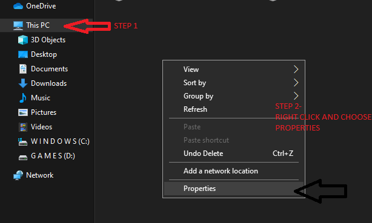
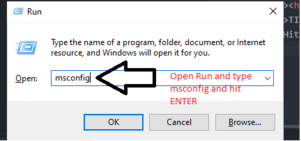
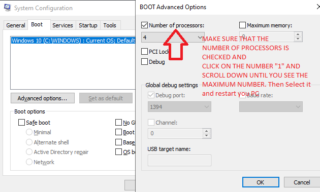
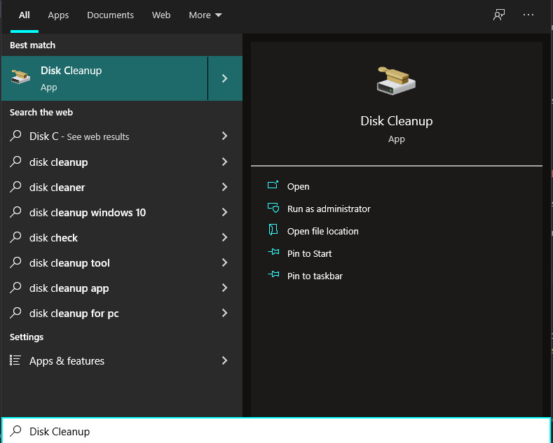
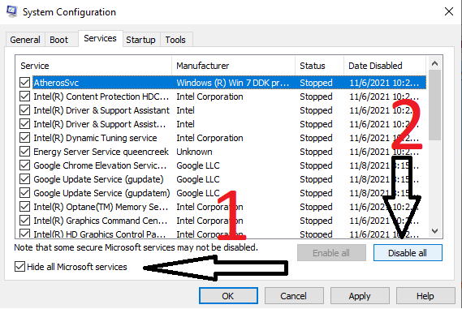

First, Check your pc specifications.
For doing this, you need to go to your file explorer --> This Pc --> Right Click and choose "PROPERTIES" Check the below for some help

Hit WINDOWSkey +Rand type msconfig to open Ms Config or Microsoft Configuration and hit ENTER
This opens the System Configuration App. After that, select BOOT TAB and click on Advanced Options and make sure that NUMBER OF PROCESSORS IS ENABLEDand restart your pc if needed
This step helps in making sure that all your processors are enabled for functioning :D
Open the START meny by pressing WINDOWSkey and then type Disk Cleanup
Select the C Driveand Click "OK". After clicking ok, it will automatically scan for any junk files in your pc.
After Scanning, It will show some pop up in which makesure that all of the items are checked and then click on the OKbutton
This step and also a few other steps below will help in removing Junk Files from your pc.
Again open the Run command by presing WINDOWS KEY + Rand then type- This opens File Explorer. The window will have files that aren't required for your pc. Temp stands for TEMPORARY. Those files are the files that are temporary or files that aren't needed for your pc. The big number of files, the slower your pc gets. Delete all the files from the folder by pressingControl + A and this will select all the files. Then press the DELETEbutton to delete all the files.Do the same process for
Disable Start Up Programs and also unnecessery Services running on your pc
Hit- Control + Shift + EscapeTo open task manager. After that, go to the "Startup" tab and then right click on all the programs that are enabled and select the oprtion Disable

Next step is to open remove all the unnecessery services in our pc. Press the Windows + Rbutton to open the run command and then type-After opening the System Configuration, go to the services tab and check the box- Hide All Microsoft Services. After that, select the option- "DISABLE ALL"
Then hit Ok --> Apply and then restart your pc if asked.
(IMPORTANT) Uptdate your pc When ever ASKED
And also Shut Down your pc after use and also restart your pc SEVERAL times per day
Delete Internet Browsing data
This data takes so much space from your pc HHD Space. This doesn't agree to your storage restrictions. Also, Install Clean Master OR CC Cleaner for cleaning your pc's junk.
Organize Desktop Icons By categorizing desktop icons into folders, it not only cleans up your background, it can also cut down your device’s RAM usage. Each time your computer turns on, it must load each individual icon when you have not organized your desktop, which takes up lots of RAM space. This way, your computer only needs to load the few folders on your desktop.
Use Activity/Resource Monitor to Check Memory
Your activity or resource monitor will show you which programs are taking up the most memory and using a large bit of your CPU, or Central Processing Unit.
Mac: Go to Library > Applications > Utilities. Launch the Activity Monitor and select the % CPU column to see which programs are at the top. If anything is using over 50%, chances are that it is slowing down all over programs. Make your computer faster by deleting the application and using a faster alternative or ensure that all other programs are closed when using that application.
PC: Open the Start Menu and go to All Programs > Accessories > System Tools > Resource Monitor. Check the CPU Usage percentage, and click the Applications tab to view the applications using the most memory. Delete and replace application or ensure the application is only open when necessary.
Change Power Plan
When your computer is running slow, it can often mean that your device is running on low performance, or a save battery mode. Changing your power plan may make your computer run faster.
Mac: Select the Apple icon in the top left-hand corner. Then choose System Preferences > Energy Saver. Check “Restart automatically if the computer freezes” and “Put the hard disk to sleep when possible” for improved computer usage.
PC: Go to the Control Panel > Power Options. From there you can select your power to optimize performance. High performance is your best option for improving the speed and performance of your computer. Just be wary that this may take more power to use.